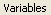

In the transform editor, it is now time to go to the variations tab
 .
Click on it to view its contents.
The right-hand side of your transform editor will look like the image below:
.
Click on it to view its contents.
The right-hand side of your transform editor will look like the image below:
Set the value of the linear variation equal to zero . Then scroll about halfway down the list of variations until you see a variation called Julia, and set it equal to 1 . Do this for two of the transforms. Make it transforms 2 and 3 to make this tutorial a bit easier- those are the transforms that I'll be doing this to.
It does not matter at all which transforms you actually use, as long as they are in exactly the same position as the yellow and green triangles in the picture above. This is the part that puts the Julia in Grand Julia.
Now let's mess with the variations on transforms 1 and 4 (the red triangle and the blue triangles respectively in the picture above). These are a little more complicated than transforms two and three, because adjusting them involves changing both variations and variables.
Select the first transform (The red one in the picture above), and set the Julian to .5 and the Julia variation to 0, as shown in the image above.
The Julian variation is a slightly modified Julia variation. For a brief explanation of how it works that doesn't really explain anything, think of Julia and Julian like this: the Julia variation is a specific, mathematical pattern. Imagine that you took that pattern and made it into a rubber stamp. Take that rubber stamp, and stamp it around the edges of a circle. That is more or less what Julian does to the basic Julia equation. In fact, the reason it is called Julian is because it should really be called Julia-n. The n stands for the number of Julia patterns that have been stamped around your Julia circle.
Keep in mind that this is a really awful explanation that does not explain why a Julian does some of the really neat stuff that it does. But it will serve for this tutorial, and explains why we have to deal with variables. Julian does not magically know how many times you want to stamp around the circle, so you have to tell it. While you still have transform 1 selected, go to the variables tab. 
Scroll down until you get to Julian_power and Julian_dist. For the fractal in this example, transform 1's Julian_power should be set to 5 and transform 1's Julian_dist should be set to 1.
What do these two variables do? I don't really know for sure. However, with my long experience I can give you a few pointers about how these variables behave.
Julian_power tells the fractal how many times to stamp a julia set around the circle. If you type three, you will notice that the part of your fractal controlled by this transform starts looking more like a triangle, or a three-leaf clover, or something three-ish. If you type five, all of a sudden it's more star-shaped or pentagon-shaped. However, this is where the stamp metaphor begins to break down. What happens if you type in two? Whoops, your fractal begins looking more like a four-leaf clover. What if you type in 8? Then the part of the fractal controlled by this transform sprouts eight points. Moral of the story- odd numbers do more or less what you expect- but even numbers give you twice as much as you expect.
What about Julian_dist? This one behaves pretty nicely. Julian_power tells how many vertices the Julian-controlled part of the fractal will have. Julian_dist tells you how pointy those vertices are going to get. A value of 1 leaves the image as is. A value of two stretches it to be twice as long as value 1. A value of 3 makes the vertex even pointier. This is somewhat useful if you are trying to make gear teeth or stars or other things that should be more pointy. Lowering Julian_dist, however, has some weird effects that I don't know how to explain, so I'm not going to try. The point is, play with them until you get a feel for how they act in certain situations!
Now let's take care of the fourth transform. Choose the 4th transform. Set its Julia to .1 and its Julian to .3. Go to the variables tab. Set transform 1's Julian_power to 2 and transform 1's Julian_dist to 1.
At this point the fractal in your main screen will look like the one below.
The parameter set for this particular example is here.
<flame name="basecircle11" version="Apophysis 2.08 beta 2" size="859 609" center="0.00683146982999355 0.000810697384113213" scale="189.95" angle="-1.57742857795248" rotate="90.3800000000003" zoom="1.282" oversample="1" filter="0.2" quality="1" background="0 0 0" brightness="4" gamma="4" > <xform weight="0.25" color="0" julian="0.5" coefs="0.999999 0 0 0.999999 0 0" julian_power="5" julian_dist="1" /> <xform weight="0.25" color="0.333333333333333" julia="1" coefs="0 -1 1 0 0 0" /> <xform weight="0.25" color="0.666666666666667" julia="1" coefs="-1 0 0 -1 0 0" /> <xform weight="0.25" color="1" julia="0.1" julian="0.3" coefs="0 1.000002 -1.000002 0 0 0" julian_power="2" julian_dist="1" /> <palette count="256" format="RGB"> 4B1F5A4F22594D20594B1F5A4B1F5A4B1F5A4D20594F2259 4F22594F22594F22594D20594B1F5A4B1F5A4B1F5A4B1F5A 4B1F5A4B1F5A4B1F5A4B1F5A4D20594F22594F22594F2259 4F225950215A52205B804950AF7246C78746E09D46E19E47 E09D46C67D2EC27F21BE8214B88919B2911EB09121AE9224 A392267A5C4051265B50245A4F22594F22594F22594F2259 4F22594F22594D20594B1F5A412736382F123E330F45380C 684B00906B10B88C21CD9533E29F46E19F47E19F48E3A14A E7A449E1BD31CDA929BA9522C79D35D4A549E2A74BD89D65 C0A989C492A7C87CC6BC74CEB16CD67F68B34E659151215D 4F22594F22594F22594F22594D20594B1F5A4B1F5A4E1C5B 50205A72306D9540819E5D79A77B72B28973BE946EC39971 D79C64E09D46CA822DB56714B36213B15E1285540F543111 4B1F5A4D20594F22593519341C10100D0011251F13330B3D 50235AB1705AB87F58C08F57C39971C19F7AC8AB81C7A57F B289739875687F625E67425B4F22594F22594F22594F2259 4F22594F22594F22594F22594F22594F22594F22594F2259 4F22594F22594F22594F22594F22594F22594F22594F2259 512258B1714BC57B4CDA854EE09E47E2A548E7A84BE2A952 BE9B73B99170B5876DB87E58AA724FA98E3DA6902BA7912E 9E75634D8BC44B8BB54A8CA6407377577F36896B2DB15F13 B66E08B3690AB1650D7C5A034F4114471D4F4B1F5A4F2259 62663371762474673247582B471D4D4E21584F22594F2259 4F22594C21434A202E442B0D452B0A341C0234300A243D13 274E0B386C0A5B5616866218AF5D11A950008E1A03453911 23541C1D423A304E1C57470C8C580DB15E12B66611B26014 883B315424544F22594F22594B1F5A4B1F5A4B1F5A4B1F5A 4F22594F22594F22594F22595125465C50148D5C17AA7B13 BA8012C17213B37915A27B20746E1A453C11112C00171B04 00050411001A22012E3A1036471D4F4B1F5A4A215D254473 1A5D6D3377683E6B7E32597A2745794E225F4F22594F2259 4F22594F22594F22594F22594F22594B1F5A4B1F5A4B1F5A </palette> </flame>
The Julia variation is a complex mathematical expression that creates the intricate patterns you see in the fractal above. It was invented by a fellow called Gaston Maurice Julia, who's work on Julia sets set the stage for Mandelbrot to create his Mandelbrot set and start the whole mathematical love affair with fractals. He was also a war veteran. Look him up--he's an interesting character.